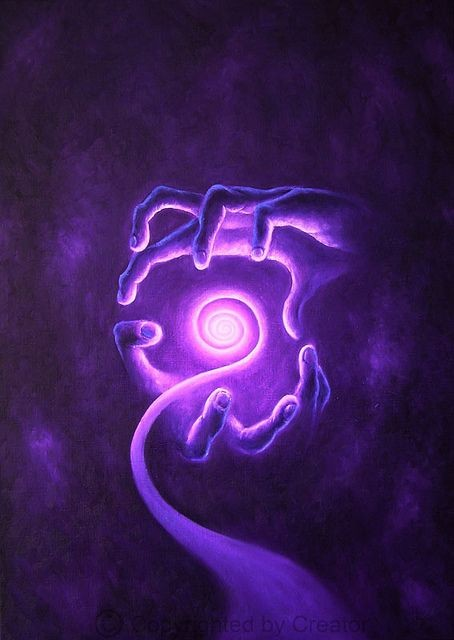

27 Теноатль
- Тебе надо найти Теноатль, - услышала я голос на пробуждении.
Что такое теноатль? В этом слове было что-то мексиканское... связанное с культурой древних ацтеков или тольтеков.
Включила подсветку часов - почти три ночи.
- Что это означает? - спрашиваю невидимых существ.
Мой вопрос остался без ответа.
Вечером мне позвонил Макс
- Привет, Макс. Неужто у тебя проснулась совесть и ты-таки решил отдать мне сувенир, который привёз из Мексики?
- Ну и это тоже. Я как раз про Мексику поговорить хотел. Не с кем больше мне обсудить эту тему.
- Слушаю.
- Вроде как бы и съездил, а вроде и мимо... я же шаманом хотел стать. Нашел шамана, попросился к нему в ученики. Думал, Дона Хуана встретил. А на деле оказалась разводка. Там все они такие - давно уже наживаются на бестолковых гринго, делают бизнес. Во мне он видел лишь денежный мешок. Поначалу голову задурил своими сказками о "Силе". В итоге свелось все к тому, что мы днями напролет курили трубку да пили зелье. Я такой ужас пережил, чуть не помер, потом откачивали. Вроде кажется - вот оно, понимание пришло, весь мир открыт как на ладони, внутренним взором вижу все его скрытые тайны. А действие зелья кончается - и опять все то же болото. Я даже йогу и пранаямы забросил.
В своё время Макс проводил занятия по хатха-йоге. Тогда он был вдохновленный и энергичный, казалось, мир вот-вот откроет перед ним все свои тайны. Но время шло, и ничего не менялось. Начитавшись книжек Тимоти Лири и Олдоса Хаксли, Макс верил, что "двери восприятия" вот-вот распахнутся. Только, видимо, замок крепкий оказался или ручку не туда поворачивал. Потихоньку нахлынуло разочарование.
- Я вот чего подумал... все равно от веществ толку нет, а где дальше искать - ума не приложу. Решил заняться осознанными снами - может, там найду ответы на свои вопросы.
- Ты же вроде пытаешься не первый год.
- Да как-то не идёт у меня... - ответил голос в трубке, - Разные техники пробовал, да мимо всё. А ты, вроде как, специалист в этом вопросе - постоянно выходишь в осознанные сны. Может, присоветуешь какую-нибудь действенную технику? Или оно у тебя само получается без всяких усилий? Ты говорила, видишь их с рождения.
- Так и есть. Само...
Да, вижу-то я их с детства. Но как объяснишь Максу, что за этим "само" скрываются годы тщетных попыток, разочарований, тщательного анализа неудач. А главное - у меня была цель: вначале - отыскать Елену, а потом увидеть родное погибшее существо. Сколько же попыток обернулось провалом, сколько ночей я не спала. А Макс, как и многие, бросал все попытки после первых серьезных трудностей. Но это и понятно - по сути, что можно искать в мире снов? Стоит ли игра свеч?
- Слушай, а ты не встречала там сущностей? Ну тех самых неорганов, о которых писал Кастанеда? - спросил Макс.
Мне вспомнилась книга Кастанеды, в которой описывался мир сущностей снов - длинные туннели, куда Карлоса привел эмиссар. В книге говорилось, что этот мир был ловушкой - сущности заманивали туда и не выпускали. С этими существами умели взаимодействовать древние Тольтеки. Но меня привлекло другое - что эти сущности жили сотни, а то и тысячи лет. А меня с детства беспокоил вопрос - что же там дальше, после смерти? Ведь должно же там что-то быть - иначе все бессмысленно!
- А что? - отвечаю вопросом на вопрос.
- Может, и мне попробовать навестить их? Хотя, стрёмно это. Вдруг я влипну, как и Карлос? Они же заманили его и выпили почти всю его энергию, он чуть не помер.
- А чего тебе от них надо? - продолжаю тянуть время.
- Да как тебе сказать... я запутался. Все как-то бессмысленно. Не могу я жить как все - работа-дом-работа. Это не жизнь, а существование. Не для этого мы здесь! Надо найти нечто большее. Мы же не просто тела, которые ходят, едят, телек смотрят...
- Скажи, Макс, - спрашиваю, ощущая покалывание в пальцах, - ты хочешь сохранить своё сознание и память? Не исчезнуть, когда придет время оставить тело?
- Именно! Я же об этом и говорю! Скажи, душа - она бессмертна? С какой стати верить, что там вещают в церкви эти бородатые дяденьки, которые прочитали книжку и считают себя самыми умными?
- А Карлосу ты зачем веришь? - спрашиваю, - Допустим, написанное в этой книге правда. Но кто сказал, что эти неорганы настолько зловредные? Почему для Карлоса идея использовать сущностей мира снов казалась настолько естественным? Даже не попытаться разобраться, кто они такие - просто поймать и заставить работать на себя! Откуда это в людях? Сначала уничтожили индейцев... теперь решили добраться и до сущностей. Хорошо, хоть эти себя в обиду не дают. Карлос сам их позвал и начал им навязывать свои правила игры. Не мудрено, что ребята оказались не очень довольны такому повороту событий. Кому понравится, что их собираются использовать и заставлять работать на себя? Нет бы просто поговорить по душам. А для начала попытаться наладить контакт, чтобы удостовериться, что существует взаимопонимание.
- Согласен... да он, похоже, сменил одну религию на другую - католицизм на Дона Хуана. Как привык верить рассказкам, так и продолжал. С другой стороны... у меня знакомая была, вместе йогой занимались. Она рассказывала, что её друзья наткнулись на каких-то ужасных красноглазых вампиров, которые их преследовали во снах. Они спать ложиться боялись!
- Как Фреди Крюгер?
- Не совсем... Она говорила, что сама видела, как они делают из людей оболочки для вселения! Глаза их становятся пустые и страшные как у безумцев, в них красные огоньки. Говорит, в метро иногда таких видит.
Мне вдруг стало отчего то искренне смешно.
Я вспомнила, как однажды видела у моих собеседников красные глаза, когда меня водили на "охоту". Раньше бы я испугалась такого поворота событий, а теперь столько всего передумала, что уже надоело безосновательно бояться на пустом месте.
"А может, я и вправду хочу из тебя сделать оболочку для вселения" - прошептал голос внутри, - "Поглотить твое сознание и сам выйти наружу. Или, может, я это делаю прямо сейчас? Уже сделал..."
"Цыц" - ответила я, - "Неужто тебе будет не скучно разговаривать самому с собой? Ты же любишь мои эмоции... тебе нужна я, живая - иначе, кто же тебя будет бояться?"
"Выпью тебя, подчиню, и буду искать новую жертву при помощи твоего тела" - ответил голос
"Ну это мы посмотрим!"
Мысленный разговор шел в полушутливой манере. Затем я сообразила... а ведь раньше я вполне могла всё вывернуть наизнанку и представить единение сознаний таким образом. Я вспомнила картинку, которую увидела летом в лесу, как меня заполняют красные огоньки. Заселились... А как же иначе? При объединении поглощение неизбежно. Является ли это смертью? Но ведь иногда даже книга может перевернуть сознание. Что тогда - автор книги поглотил тебя?
- Ну и всё же, ты мне скажи, - продолжал Макс, - ты с детства в мире снов бродишь осознанно. Кого-нибудь встречала?
- Встречала...
- Расскажи!
Я вспомнила слова Эдика о том, что ни в коем случае нельзя разглашать тайну наших вурдалаков. А потом подумала - неужто и я попалась в ту же ловушку, что и Карлос, поверила словам очередного "Дона Хуана". Почему, когда ты встречаешься с неизвестным и находится кто-то, кто знает чуть больше тебя, вдруг превращается в авторитета?
- Как видишь, в туннели меня не утащили и я до сих пор жива.
- А какие они из себя? - спросил Макс с любопытством.
Вдруг я ощутила, что меня окутала горячая волна. Так захотелось рассказать, поделиться. И не просто рассказать - утащить за собой в тёмный омут. Вновь я ощутила странное давление в гортани в области зубов. Вернулась та самая "таинственная страсть" - Голод. Как же в этот момент захотелось добраться до Макса, вцепиться зубами, и ощутить вкус горячего "философского эликсира".
Могу ли я обратить его в вампира?
"А почему нет?" - ответил насмешливый голос, - "Ты хочешь убить его ради нас? Ощутить тот миг, когда умирает человек и рождается вампир, возникает новое качество?"
"Да..." - ответила я мысленно, - "Хочу!"
Вампиры... ментаты... убийцы...
В этот момент я ощутила, что мои движения перехватили и начали говорить моими губами.
- А хочешь, я тебя к ним проведу?
- Давай! А как? - удивился Макс
- Я приду в твой сон и заберу тебя с собой. Только пусти меня. Разреши мне войти.
Вновь вне вспомнилась старая байка о том, что вампира нужно пустить, иначе он не может пересечь порог.
- Конечно, приходи - о чём речь!
Надо сказать, я так и не научилась ходить в чужие сны. Много раз пыталась. Несколько раз действительно удавалось оказаться с людьми в одном и том же сне, а под утро узнать, что события в снах совпадают до мелочей. Но это была капля в море. Тем не менее, я была уверена, что в эту ночь всё получится.
- Навещу
- Буду ждать! - ответил Макс
- Завтра все обсудим за чашечкой кофе. Заодно отдашь мне сувенир.
Вскоре я забралась под одеяло. Вновь я ощутила, как по телу пошли лихорадочные потоки. Я была на границе миров. Меня окружили существа с ярко-красными глазами, полыхающими огнём. Все, включая меня, были связаны нитями грибницы, словно плодовые тела грибов. И в этом Единении было что-то необыкновенно притягательное. Вновь я услышала внутри себя слова нашей древней песни: "Мы Едины, мы полностью Едины". Существа казались огненными цветами удивительной окраски - какое же счастье находиться в этом сплетении мыслей.
- Итак, ты готова совершить преступление? - спросил тот, кто стоял ближе всего ко мне и глядел на меня огненным взглядом красных глаз.
- Да, готова. А что мне за это будет? Придёт какой-то страж порядка и осудит?
- Ты принадлежишь нашему миру - перед нами и отчитываешься. Перед нами всеми, включая тебя. Ты готова взять на себя отвественность за это ритуальное убийство и превращение в вампира?
- Да. И чем мне грозит эта охота - муками ада? Расплатой?
Мне показалось, что существо в капюшоне усмехнулось.
- Помучиться тебе придется, это уж точно. Ты думала - просто укусила и всё? Нет... тебе придется провести очень кропотливую работу. Мы никогда не бросаем своих инициатов - это против наших правил. Уж если беремся, то доводим дело до конца. Это значит, что ты подписываешься на то, что будешь участвовать в инициации и не сможешь увильнуть.
- Ух-ты! Я буду проводить инициацию?
- Здесь ты погорячилась. Не может одно неокрепшее сознание вести за собой другое. Мы всегда все делаем вместе. Мы будем проводить инициацию, ты будешь участвовать в ней. Мы будем работать через тебя - он еще не готов к разговору с нами напрямую. Ты будешь нашим проводником, хотя до сих пор даже не представляешь, что это означает.
- Согласна! Это же чертовски интересно! - воскликнула я.
Вокруг меня возникали невероятные всполыхи полярного сияния.
- Подумай: ты готова забрать его с собой во тьму, причинить ему боль, а затем попрощаться с ним?
- Не такая уж и тёмная эта тьма... Но зачем прощаться?
- Твои глаза уже привыкли к темноте. Прежде чем он сможет обрести необходимую зоркость, он останется один на один с новым пугающим неизведанным миром. Он пройдет через все свои страхи - того и гляди из этой тьмы вылезет какой-нибудь монстр. Наступит момент, когда он окажется в ужасе перед неизведанным на обломках старого привычного мира. Он будет метаться словно слепой, которому необходим поводырь. Тогда он придет к тебе и мы поведем его. Твоя задача - привести его туда, где мы все. Дальше мы сами продолжим работу, а ты должна будешь оставить его. В какой-то момент твоё влияние должно прекратиться. Увы, но это так - как правило те, кого ведут, оставляют своих проводников, чтобы выйти из-под их власти и расправить крылья во тьме. С течением времени ощущения утончаются, глаза становятся все более зоркие и проявляется невидимое ранее. Внутри сердца вампира горит огонь - им он освещает окружающую тьму, поэтому у нас нет страха темноты - это наша стихия. Согласна забрать его с собой в ад?
- А почему нет? Ведь, черт возьми, он же хочет сохранить сознание и память после смерти!
- Но ведь ты же сама не уверена, что стала бессмертна
- Но у меня хоть появилась зацепка! И да - я хочу привести его в наше Единение, желаю, чтобы он растворился в нас, стал нашим, ощутил этот безумный экстаз сплетения мыслей. К чертям все эти его вещества - ощутив Единение, он узнает вкус настоящего совершенного наркотика. Я в ужасе думаю, как я столько лет могла быть одна внутри. Можете называть это адом, как угодно. Но на мой взгляд, это не ад: в аду должно быть очень холодно. Холодно душе, поскольку она мается одинокая без приюта. А мы друг друга греем. Пусть в том мире, куда я приду сама и приведу его за собой, страшно и ужасно, но, черт возьми - ведь он там будет не один! Я там буду, мы все там будем и мы вместе построим из этого ада такой рай, что ангелы завидовать будут и к нам попросятся! Ведь все же в наших руках! Ни какие-то там высшие силы построят - мы с вами построим! Самые обыкновенные вурдалаки... Главное, что мы вместе. Любовь окрыляет, дает силы. Да, может, я его приведу в омут - но кто сказал, что другие дороги лучше? Может, это и есть его путь - вдруг кто-то мудрый решил, что на этом пути он должен встретить меня? А что если это для него наилучший расклад? К тому же, я на самом деле не знаю, что меня ждет, но я знаю точно - я не брошу того, кто ищет и мучается, как не бросили меня. Пусть я совершаю преступление, пусть мой Голод мне окончательно вскружил голову - но трижды "да"!
- Тогда вперед, - ответило существо и с этими словами подошло ко мне
- Но... я не знаю, как укусить его, чтобы он обратился, - спохватываюсь, вновь вспоминая, что я сама еще только начала оглядываться в этом мире
- Доверься... - ответило существо, обняло меня и поцеловало в губы. Поначалу страсть захлеснула, но потом я ощутила агрессию, словно хищник накинулся на меня. Во рту его вместо языка была раскаленная лава, которая начала вливаться в меня, сжигая изнутри.
- Пей... - послышался хор голосов, - пей из чаши...
Я пыталась вырваться, но не могла. На этот раз его ласки не были приятными - он вцепился в меня когтями, сдирая одежду.
- Я уничтожу эту наносную мишуру, - послышался шепот.
Иногда я возвращалась в своё тело, лежащее на кровати, и даже тогда ощущала, что во рту всё горело. Язык болел, словно красноглазый демон пытался его откусить.
- Я выдерну из тебя всю ложь и пустую болтовню. Ты будешь молчать и заговоришь лишь когда я решу!
На лбу выступил пот, все тело сотрясалось в лихорадке. Затем меня вновь утянуло в тот мир.
Я лежала в центре огненного круга без одежды, существо в плаще крепко держало меня, вокруг стояли другие существа с сияющими красными глазами, которые заглядывали в самую душу. И некуда было от них спрятаться. Перед глазами пробегала вся моя жизнь, вся та ложь, все те глупости, которые я наговорила людям. Вот она - расплата. Грязные изодранные клочки моей одежды валялись рядом. Неужели я не заметила, что я моя одежда так выпачкалась? Существо кидало лохмотья в огонь. Перед глазами проносились все ненужные моменты, когда я бездарно тратила время жизни - огонь поглощал их, причиняя мне боль. Эти воспоминания ранили своей правдой, как ранили моё тело его когти.
Я не могла даже пошевелиться. Где-то в другом мире, где я лежала под одеялом, мои движения были полностью перехвачены, я не могла даже встать. Существо занялось со мной любовью, но это не были ласки. Я ощутила его как острый огненный кинжал, хотела закричать, но не могла.
- Сегодня не будет ласки, я возьму своё силой! - сказал демон
Безумный ритм не прекращался. Под конец мне показалось, что я и вправду умираю.
Когда всё закончилось, я лежала не жива не мертва. Время остановилось.
Мне кажется, прошла целая вечность.
Затем он вновь склонился надо мной и протянул ко мне руку. Его рука полыхала огнем. Он словно ацтекский жрец дотронулся до моей грудной клетки, и его рука прошла насквозь, к самому сердцу, которое он начал шевелить и заставил биться.
Затем отошел и сказал.
- Вставай! Ты готова. Пошли.
Сцена сменилась, либо я провалилась в другой осознанный сон.
Мы стояли все вместе, перед нами была прозрачная занавеска. За занавеской спал человек.
Существо рядом со мной отодвинуло занавеску.
- Твой выход из-за кулис. Я убираю вуаль.
Я сделала шаг вперед и... вышла из зеркала в комнату ветхого дома.
Посреди комнаты на полу спал Макс.
Вдали слышался гул. Ветхий дом начал осыпаться.
Первая мысль была разбудить Макса.
- Он не проснется. У него летаргия. У тебя есть только один выход - укуси его.
Вновь красная пелена застелила все перед глазами.
Я уже не думала, хорошо я делаю или плохо - бесшумной тенью я подлетела к Максу и укусила его за шею. В этот момент комната осветилась пугающим вишнево-красным светом.
Макс открыл глаза.
- Я ничего не вижу, - закричал он, - что со мной?! Я ничего не вижу!
У него началась паника.
- В зеркало! Быстро! - услышала я голос, - время на исходе
Я быстро схватила ничего не понимающего Макса и начала его тянуть к зеркалу. Макс упирался, пытался вырваться.
- На помощь! Я ничего не вижу.
Между тем ветхий дом шатался. Того и гляди, пол вот-вот провалится. За окном слышался шум рычащего зверя.
Мне самой было невероятно страшно. Хотелось бросить Макса и спастись, прыгнусь в зеркало, где меня ждали. Но я не могла его бросить. Буквально за шкирку я дотащила Макса до зеркала, несмотря на его сопротивление. Зазеркальные существа быстро втянули Макса внутрь и я прыгнула следом.
Кадр сменился. Я видела дом со стороны. В окнах светились все те же вишнево-красные огни, словно там полыхал пожар. К дому подъехал экскаватор, который начал его разрушать. Ветхий дом уходил в небытие...
Утром я с трудом подняла голову с подушки. В глазах потемнело. Чувствовала я себя ужасно.
- Что ты со мной сделал? Вурдалак проклятый!
- А что ты хотела? Терпи, раз связалась с нечистой силой.
- Что означал этот дом? Что с Максом? - спрашиваю.
- Поймешь позже.
Вечером мы сидели в кафе за столиком в уголке и пили ароматный черный кофе.
- Я видел странный сон, - сказал Макс, - ты залезла ко мне среди ночи в окно и потянула меня за руку к стене, в которой открылась огненная дверь. Я упирался, поскольку перепугался и ничего не понял, а ты меня тянула за собой...
- Почти так оно и было... - ответила я.
- Что это за дверь? - спросил Макс.
- Наш мир.
- Кто вы такие?
- Вампиры, - ответила я, делая глоток кофе.
Макс чуть не подавился.
- Кто? Вот чёрт возьми... я давно чувствовал, что ты какая-то... другая. Вот оно что!
- Хочешь стать вампиром?
- Хм... звучит интригующе!
И вновь ощутила, как мои движения перехватили.
- Иди к нам, - сказала я странным дребежжащим голосом, глядя Максу в правый глаз.
В этот момент я осознала - через меня кто-то проводил какую-то странную операцию, словно пролезал внутрь Макса и что-то там творил.
Внезапно у Макса началась лихорадка.
Я услышала голос внутри:
"Помнишь, мы говорили, что закрыли от тебя всего один момент - момент смерти. Когда Макс будет проходить сквозь смерть, ты закроешь ее от него и увидишь все сполна... тебе некуда будет бежать. Ты закроешь глаза, но продолжишь видеть её сквозь закрытые веки..."
- Что со мной? - спросил Макс, - что ты сделала?
Я молчала, продолжая глядеть в его правый глаз. При этом я ощущала странное наслаждение, смешанное с ужасом. Словно в этот миг я сама его поедала.
- Укуси меня... - прошептал Макс в каком-то странном гипнотическом полубреду.
Просить было ни к чему. Я уже чувствовала этот лихорадочный дурманящий поток жизненной силы.
"Что, нравится пить чужую кровь, дважды рожденная?" - усмехнулся голос, - "Не надейся, что я позволю тебе насытиться. Вампир должен быть голоден. Это - лишь небольшая компенсация за сегодняшнюю ночь. Тебе надо восстановиться."
Или, все же, это наведенное состояние, хитрый демон играет со мной?
- Что за чертовщина? - спросил Макс, словно просыпаясь, - У меня голова кружится... вдруг силы куда-то ушли... что ты сделала?
- Ты - Наш. Мы тебя забираем. Мы открыли тебе дверь - иди, ничего не бойся. И запомни правило игры: будет много информации - не вся она правдива, но вся для чего-то нужна. Из неё, анализируя, доказывая и опровергая, ты сам, слушая свое сердце, должен будешь собрать правду словно паззл и найти нас, - говорил через меня огненный демон.
- Я приду...
- Тебе надо найти нить. Будь честен с собой, ищи внутри. Твоя инициация началась. Тебе предстоит умереть и переродиться. Стать частью нашего мира, одним из нас. Встать рядом с нами, заняться общим делом. Став нашим, ты обретешь свое бессмертие в нас, настоящие осознание, сохранишь в нас память, но путь будет тернист и труден. Много крови на нем ты потеряешь. Сам с нашей помощью разрушишь себя, уничтожишь все наносное и отжившее, затем построишь себя от основания, архитектор. Однажды найдя себя, больше никогда не предавай свою душу. Иди... однажды ты узнаешь, кто мы на самом деле. Мы верим в тебя. Мы ждем тебя, идущий. Откройся Эволюции.
